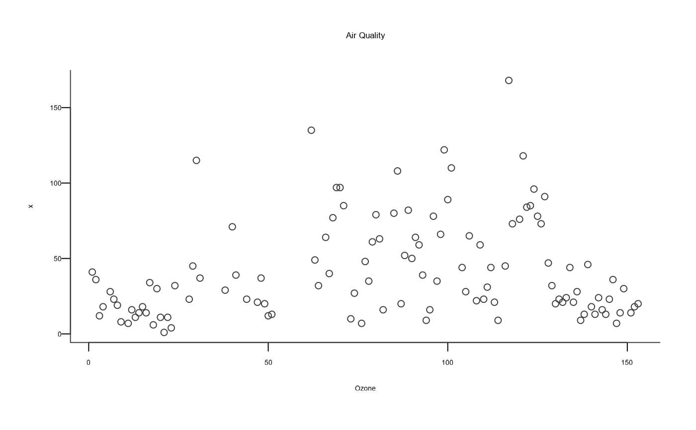

Basic X-Y plotting that follows AAGI colour and typography guidelines that uses (hopefully) sensible defaults.
Usage
plot_aagi(
x,
y = NULL,
type = "p",
xlim = NULL,
ylim = NULL,
main = NULL,
sub = NULL,
xlab = NULL,
ylab = NULL,
col = "AAGI Black",
pch = 16,
...
)Arguments
- x
Values to be plotted on x-axis.
- y
Values to be used on y-axis. Optional.
- type
What type of plot should be drawn. Defaults to
pfor points“ See Section "Type" for more.- xlim
Numeric value for x-axis limits. Optional.
- ylim
Numeric value for y-axis limits. Optional.
- main
Main title text.
- sub
Subtitle text below x-axis label.
- xlab
X-axis label. Optional, if blank will default to data supplied label.
- ylab
Y-axis label. Optional, if blank will default to data supplied label if one is available.
- col
Colour to use for points Defaults to "AAGI Black", a very dark grey. Can be supplied as a named AAGI colour; e.g., "AAGI Black"; a named colour, "black"; or a hexadecimal code, "#414042".
- pch
plotting ‘character’, i.e., symbol to use. This can either be a single character or an integer code for one of a set of graphics symbols. The full set of S symbols is available with
pch = 0:18, see the examples below. (NB: R uses circles instead of the octagons used in S.)- ...
Arguments to be passed to methods, such as graphical parameters (see
graphics::par()). The most commonly used argument would betypewhat type of plot should be drawn.
Type
Possible types are:
- “p”
for points
- “l”
for lines
- “b”
for both
- “c”
for the lines part alone of “b”
- “o”
for both ‘overplotted’
- “h”
for ‘histogram’ like (or ‘high-density’) vertical lines
- “s”
for stair steps
- “n”
for no plotting
Value pch = "." (equivalently pch = 46) is handled specially. It is a
rectangle of side 0.01 inch (scaled by cex). In addition, if cex = 1
(the default), each side is at least one pixel (1/72 inch on the
grDevices::pdf(), grDevices::postscript() and grDevices::xfig()
devices).
For other text symbols, cex = 1 corresponds to the default fontsize of the
device, often specified by an argument pointsize. For pch in 0:25 the
default size is about 75% of the character height (see par("cin")).
See also
graphics::plot() for full documentation of the basic plotting capabilities.
Author
Adam Sparks, adam.sparks@curtin.edu.au
Examples
library(datasets)
plot_aagi(airquality$Ozone,
main = "Air Quality",
xlab = "Ozone"
)

plot_aagi(pressure)